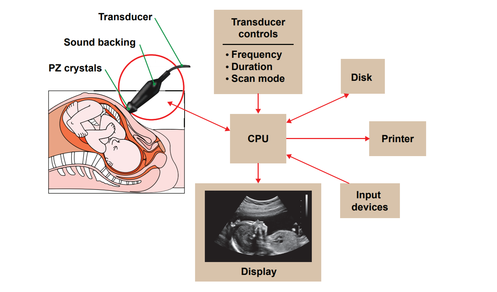
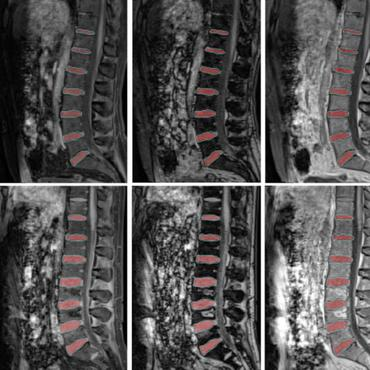

Medical imagery is an important part of diagnosis and treatment. Magnetic resonance imaging (MRI), computed tomography scan (CT scan) and ultrasound are three available systems. Ultrasound uses a device called a transducer to produce an image of the internal organ.
There is no doubt that the advances in the quality and analysis of medical imagery are giving excellent results, but they can be computationally intensive and expensive and need trained personnel for interpretation. One recent and useful development is the extension of ultrasound 3D imaging to augmented reality imaging. Research into the use of augmented reality imaging, points towards revolutionary changes in medical practice for diagnosis and for surgery; it provides simulations for medical students, it increases accuracy in the operating room and it offers valuable assistance in telemedicine.
For a definition of telemedicine click here!Image segmentation is considered the most essential medical imaging process as it extracts the region of interest (ROI) through a semiautomatic or automatic process. It divides an image into areas based on a specified description, such as segmenting body organs/tissues in the medical applications for border detection, tumor detection/segmentation, and mass detection.
Traditional machine learning methods have achieved certain beneficial effects in medical image segmentation, but they have problems such as low classification accuracy and poor robustness.
Created By:Jennifer Moulder
GitHub:Jennimm
LinkedIn: http://linkedin.com/in/jennifer-moulder-963677172